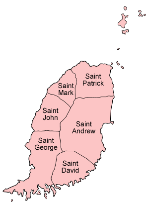

Granada
A Ilha das Especiarias

A Ilha das Especiarias
A ilha de Granada propriamente dita é a ilha maior; as Granadinas, mais pequenas, são Carriacou, Petit Martinique, Rhonde, Caille, Diamond, Large, Saline e Frigate. A maior parte da população do país vive na ilha de Granada, e as localidades principais dessa ilha são a capital, Saint George's, e também Grenville e Gouyave. A maior localidade das outras ilhas é Hillsborough em Carriacou. As ilhas são de origem vulcânica e o interior de Granada é relativamente montanhoso, com vários pequenos rios a descer até ao mar. O clima é tropical: quente e húmido, e Granada sofre ocasionalmente o efeito de furacões. As Granadinas encontram-se divididas entre os estados de Granada e São Vicente e Granadinas, sendo os territórios separados pelo Canal de Martinica.
Em 2023, sua população era de quase 125 mil pessoas. Os grupos étnicos dominantes são os negros (84%), os mulatos (13,3%) e, em menor quantidade, os indianos (2,2%) levados a Granada para trabalhar no lugar dos escravos libertados. Os brancos (franceses, britânicos, portugueses, suíços, russos, islandeses e australianos) e os ameríndios constituem percentagem reduzida da população (1,3%). O inglês é o idioma oficial. Também se fala um patois (dialeto franco-africano), reminiscência do domínio francês. As religiões com maior número de adeptos são o Catolicismo Romano (53%) e o Protestantismo (33,2%). O Anglicanismo é o único grupo religioso minoritário (13,8%).
Granada está subdividida em seis paróquias e uma dependência: Paróquias: Saint Andrew Saint David São Jorge Saint John Saint Mark Saint Patrick Dependência: Carriacou
